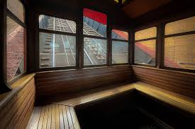
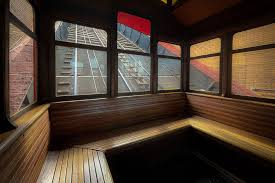

History of the Duquesne Incline
The Duquesne Incline was opened in 1877 and is one of Pittsburgh’s most iconic landmarks. Originally built to carry workers up and down Mount Washington, it has evolved into a treasured tourist attraction.
Historical Gallery

 
